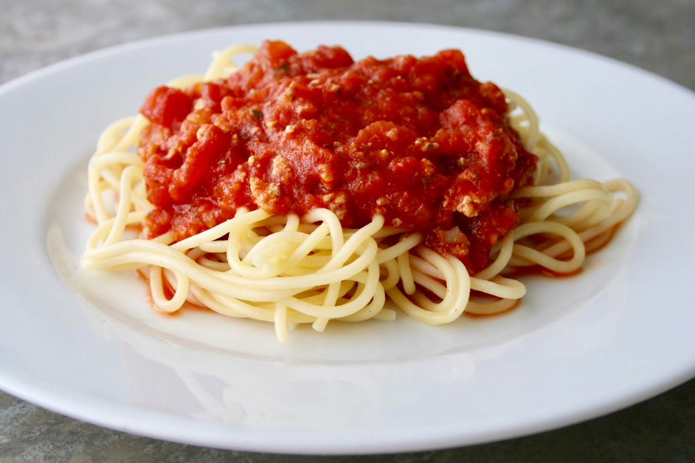

Pasta

This delicious tomato sauce for spaghetti simmers over low heat for a rich and meaty homemade taste.
Ingredients
Steps
- Bring a large pot of lightly salted water to a boil.
- Cook spaghetti in the boiling water, stirring occasionally, until tender yet firm to the bite, about 12 minutes;
- Drain.
- Serve sauce over spaghetti.